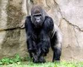

Gorillas 101
The Largest Primates
Gorillas are the largest primates, found in the equatorial forests of Africa, and are closely related to humans. These intelligent, gentle giants live in social family groups, primarily eating vegetation and building nests on the ground or in trees, getting their water from food. There are two species—Eastern and Western—with the Eastern species including the rare Mountain Gorilla, and all gorillas are considered an endangered species due to threats like habitat loss and illegal hunting.
Gorillas' natural habitats cover tropical or subtropical forest in Sub-Saharan Africa. Although their range covers a small percentage of Sub-Saharan Africa, gorillas cover a wide range of elevations. The mountain gorilla inhabits the Albertine Rift montane cloud forests of the Virunga Volcanoes, ranging in altitude from 2,200 to 4,300 m (7,200 to 14,100 ft). Lowland gorillas live in dense forests and lowland swamps and marshes as low as sea level, with western lowland gorillas living in Central West African countries and eastern lowland gorillas living in the Democratic Republic of the Congo near its border with Rwanda.
Here is a Table of the Different Types of Gorillas| Type of Gorilla | Habitat | Size | Diet |
|---|---|---|---|
| Mountain Gorilla | Albertine Rift montane cloud forests | 300-485 lbs | Leaves, shoots, fruits |
| Western Lowland Gorilla | Dense forests and swamps | 300-450 lbs | Fruits, leaves, insects |
| Eastern Lowland Gorilla | Forests in the Democratic Republic of the Congo | 400-500 lbs | Leaves, stems, fruits |
| Cross River Gorilla | Forests along the Nigeria-Cameroon border | 300-400 lbs | Leaves, fruits, insects |
| Grauer's Gorilla | Forests in the eastern Democratic Republic of the Congo | 400-500 lbs | Leaves, stems, fruits |
Now Picture Time!
